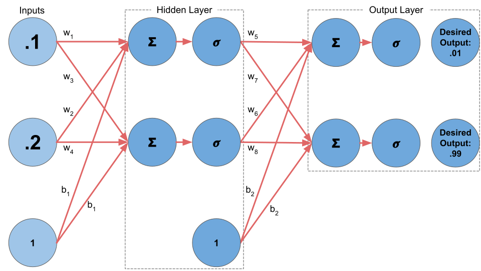

Backpropagation is the process of adjusting a model's weights based on its error. The intention of backpropagation is to adjust the model so that the output of the next model run (feedforward operation) is more closely aligned to the desired outcome that the previous model run. This process is completed via the following steps:
Let's run through a simple example and examine how new model weights are calculated in backpropagation. Below is our initial model. It has two inputs, one hidden layer, and two outputs. The activation function in both the hidden layer and output layer is a sigmoid function. Our deisred outputs are 0.01 and 0.99.
We be begin by initializing our model with random weights (you can also manually input initial weights if you want) and then calculating the model's outputs. See a graphical representation of this step and each calculation below.
-
We can see that the current ouputs of our model are not close to our desired outputs.
Next, we calculate the model's total error. This is done using the squared error function (see the formula above). In the following steps, we'll calculate the individual errors for each output and the sum them together to get the model's total error.
Now that we have the total error we can adjust the model's weights to improve its performance.
When we tune a model we adjust each individual weight so that when the model is run again, the new output is closer to the desired output than the previous output; minimizing our error. To do this we need to calculate how much a change in $w_{5}$ impacts the total error. This is done using partial derivatives. Partial derivatives allow us to see how much a function changes when one variable is allowed to change and all others are held constant; providing us a sense of how much one variable impacts a function. The impact of $w_{5}$ on the total error can be represented by the partial derivative of $E_{total}$ with respect to $w_{5}$, $\frac{\partialE_{total}}{\partialw_{5}}$.
We can not calculate $\frac{\partialE_{total}}{\partialw_{5}}$ directly since $w_{5}$ is not an input into the error function used above. $w_{5}$ is an input into a preceding calculation used to calculate total error making the total error function a composite function. However, we can use the chain rule to calculate $\frac{\partialE_{total}}{\partialw_{5}}$. The chain rule allows us to calculate the impact of a variables in a composite function by multiplying linking partial derivatives together. See the visualization below:
When we chain the three partial derivatives identified in the image above we can see how they cancel out to provide the partial derivative we need.
Now we need to find the answer for each partial derivative in our chain to generate to get our answer. We'll start by calculating $\frac{\partialE_{total}}{\partialout_{o1}}$.
Next, we'll calculate the derivative of our logistic activation function with respect to the net input, $\frac{\partialout_{o1}}{\partialnet_{o1}}$.
Then we calculate the derivative of the net input with respect to $w_{5}$, $\frac{\partialnet_{o1}}{\partialw_{5}}$.
Now we can combine the results of the three partial derivatives we've calculated to get the answer for $\frac{\partialE_{total}}{\partialw_{5}}$.
Finally, we multiply the value we have calculated by a learning rate (we will use 0.2) and subtract that value from the current weight.
Applying this same methodology to the remaining weights we end up with the following:
Now, we replace our model's weights with the updated values and start again.
Notice that while our total error after one step will still be 0.26, the net outputs in the hidden layer have changed. Given enough iterations, these small steps will result in large changes to the weights of our model, reducing the model's total error and improving our predictive capability.
{% endblock %}